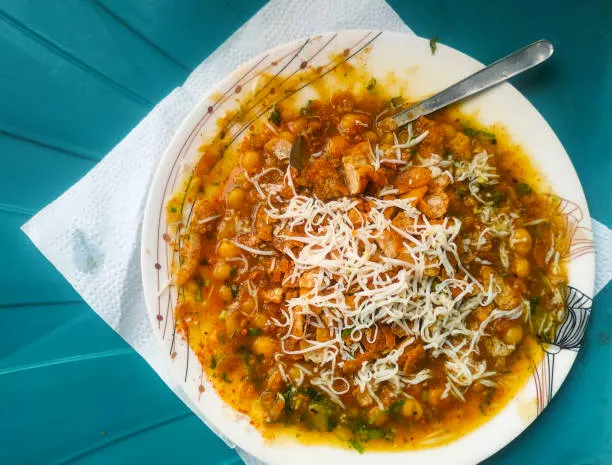

Home
Chotpoti

Description
চটপটি হলো বাংলাদেশের জনপ্রিয় টক-ঝাল-মিষ্টি স্বাদের street food।
সেদ্ধ সাদা মটর, আলু, তেঁতুলের চাটনি ও বিভিন্ন মসলা মিশিয়ে এটি তৈরি করা হয়।
Ingredients
- সাদা মটর (ভিজিয়ে সেদ্ধ করা) - ২ কাপ
- সেদ্ধ আলু - ২টা (কিউব করে কাটা)
- তেঁতুলের চাটনি - ১/২ কাপ
- কুচানো পেঁয়াজ - ২ টেবিল চামচ
- কাঁচা মরিচ কুচি - ১ চা চামচ
- ভাজা জিরা গুঁড়া - ১ চা চামচ
- চাট মসলা - ১ চা চামচ
- লবণ - স্বাদমতো
- ধনেপাতা কুচি - ২ টেবিল চামচ
Recipe (Steps)
- একটি বাটিতে সেদ্ধ মটর ও আলু ভালোভাবে মেশাও।
- এর মধ্যে পেঁয়াজ, কাঁচা মরিচ, লবণ ও মসলা যোগ করো।
- তেঁতুলের চাটনি মিশিয়ে ভালোভাবে নাড়ো।
- উপরে ধনেপাতা ছড়িয়ে গরম গরম পরিবেশন করো।